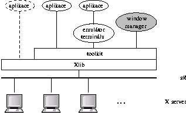
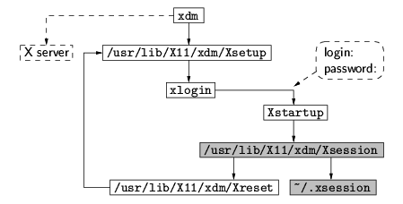

Obr. 2: Spu¹tìní prostøedí X pomocí startx
X Window System (zkrácenì X) je standardní technologie pou¾ívaná v unixových systémech pro tvorbu grafického u¾ivatelského rozhraní (GUI – graphical user interface). U¾ivatelùm Linuxu je dobøe známá implementace XFree86. V tomto seriálu èlánkù se budeme zabývat programováním aplikací pro X, proto pøedpokládám, ¾e ètenáø má u¾ivatelské znalosti prostøedí X a zná programovací jazyky C a C++. Probíraná tématika vychází z mých stejnojmenných pøedná¹ek na MFF UK. Na webových stránkách k pøedná¹ce http://www.ms.mff.cuni.cz/~beran/vyuka/X/ lze najít dal¹í doplòující informace a sbírku krátkých ukázkových programù.
Tento úvodní èlánek obsahuje seznámení s architekturou X a pøipomenutí obecných principù pou¾ívaných pøi programování grafických rozhraní. Dal¹ích nìkolik dílù seriálu bude vìnováno úvodu do toolkitu GTK+ (http://www.gtk.org/). Pak navá¾eme popisem konkurenèního toolkitu Qt (http://www.trolltech.com/products/qt/index.html). Závìr bude patøit low-level knihovnì Xlib. Mo¾ná by byl logiètìj¹í obrácený postup od Xlib k toolkitùm, nicménì takto se ètenáø døíve dozví informace potøebné pro praktické programování aplikací pomocí toolkitù. Xlib je zajímavá z dùvodu pochopení, jak X Window System funguje uvnitø, nicménì pou¾ívat pøímo tuto knihovnu není moc obvyklé. A¾ si uká¾eme tøistaøádkový program „hello-world“, uvidíme proè.
X Window System se zaèal vyvíjet jako souèást projektu Athena v Laboratory for Computer Science na MIT v roce 1983. Dal¹ím známým produktem projektu Athena je autentizaèní systém Kerberos. V rychlém sledu následovaly verze X1 (1984) a¾ X11 (1987). Verze X10 Release 4 se stala základem pro první komerèní implementace dodávané výrobci unixových pracovních stanic. Zatím poslední verze je X11 Release 6.6 z roku 2001. Referenèní implementaci X spravuje The Open Group – konsorcium pro otevøené systémy, které spravuje napø. i standard pro OS Unix.
Architektura X Window System je zalo¾ena na modelu klient-server. X server, v terminologii X display, je poèítaè, ke kterému je pøipojena grafická obrazovka, klávesnice a my¹. Dnes obvykle X server bì¾í na PC, døíve se pou¾ívaly spí¹e unixové pracovní stanice nebo specializované X terminály, tj. jednoúèelové poèítaèe na nich¾ je instalován pouze X server. Aplikace se spou¹tí na jiných poèítaèích a X terminál s nimi komunikuje po síti. X klient je program, který pou¾ívá slu¾by X serveru: zobrazování grafiky a zpracování vstupu od u¾ivatele. Server a klient spolu komunikují pomocí socketù, mohou tedy ka¾dý bì¾et na jiném poèítaèi v síti. Systém X Window je distribuovaný, u¾ivatel mù¾e mít na jedné obrazovce okna programù bì¾ících na rùzných poèítaèích a naopak aplikace z jednoho poèítaèe mohou komunikovat s u¾ivateli prostøednictvím mnoha X serverù. Dal¹í dùle¾itou vlastností je otevøenost. X se skládá z mnoha èástí komunikujících mezi sebou pøes standardizovaná rozhraní. Proto mohou bez problémù spolupracovat implementace X od rùzných výrobcù. Nìkteré èásti skládaèky (napøíklad toolkit nebo window manager) je mo¾né vymìòovat a tím pøizpùsobit vzhled a chování systému potøebám a zvyklostem konkrétního u¾ivatele.
Klient a server si povídají X protokolem. Komunikace probíhá pøes sí»ové (typicky TCP) sockety. Jestli¾e klient i server bì¾í na stejném poèítaèi, pou¾ívají se lokální sockety (AF_UNIX) a pro pøenosy objemnìj¹ích dat i sdílená pamì». Verzi protokolu vyjadøuje èíslo za písmenem X v názvu verze. Protokol ji¾ dlouho zùstává nemìnný – od verze X11 Release 1 v roce 1987. Samozøejmì bylo od té doby potøeba do X pøidat nové funkce a u jiných zmìnit jejich chování. Takové úpravy se provádìjí pomocí roz¹íøení (extensions), která definují nová volání Xlib a nové typy zpráv X protokolu. Pro roz¹íøení existuje definovaný systém registrace. Klient a server se v rámci standardního X protokolu domluví, která roz¹íøení podporují.

Obr. 1: Architektura X
Obrázek 1 zachycuje vztahy mezi hlavními èástmi celého systému X. Na jedné stranì sítì je X server, jeho¾ architekturou se zde nebudeme dále zabývat. Na¹ím cílem je programování v X, proto nás více zajímá, jak vypadá klient. Teoreticky by aplikace (klient) mohla sama otevøít sí»ový socket a X protokolem komunikovat se serverem. To ale nikdo nedìlá. Místo toho se pou¾ívá knihovna Xlib, která poskytuje rozhraní ve formì funkcí v jazyce C a internì zaji¹»uje komunikaci se serverem pomocí X protokolu. Xlib umo¾òuje provádìt jen pomìrnì primitivní operace: vytvoøení okna, kreslení grafiky do okna a pøíjem událostí, vzniklých napø. na základì akcí u¾ivatele.
Pokud se pøímo pou¾ívají volání Xlib, musí se aplikace starat o spoustu technických detailù. Nelze napø. v kódu napsat nìco jako: „Vytvoø menu s tìmito polo¾kami, a kdy¾ u¾ivatel vybere polo¾ku, generuj událost s identifikátorem polo¾ky.“ Místo toho je tøeba nakreslit rámeèek menu, do nìj napsat jednotlivé polo¾ky, detekovat kliknutí my¹i (pomocí zpracování události), pøekreslit vybranou polo¾ku zvýraznìným stylem a teprve pak je mo¾né provést akci iniciovanou výbìrem polo¾ky. Proto kód aplikace obvykle nevolá Xlib, ale pou¾ívá toolkit – knihovnu, která poskytuje jednotlivé prvky u¾ivatelského rozhraní (menu, tlaèítka, øádky pro vkládání textu, apod.). Toolkit navenek poskytuje funkce na úrovni abstrakce odpovídající na¹emu pøíkladu s menu. Programátor se u¾ nemusí starat o detaily vykreslování a zpracování u¾ivatelského vstupu a mù¾e se zamìøit na logiku aplikace. Uvnitø toolkit v implementaci svých funkcí pou¾ívá Xlib.
V prostøedí X je ¾ádoucí provozovat i shell a dal¹í unixové programy, které fungují v textovém re¾imu. K tomu se pou¾ívají emulátory terminálù (napø. xterm), fungující na jednu stranu jako X-ový program. Na druhé stranì emulátor pou¾ívá pseudoterminál a k nìmu pøipojí program bì¾ící v textovém re¾imu.
Posledním dílkem mozaiky je window manager. Ten spravuje hlavní (top-level) okna aplikací. Obvykle kolem ka¾dého top-level okna zobrazí rámeèek a umo¾òuje u¾ivateli pomocí my¹i pøesouvat okna, mìnit jejich velikost a zavírat je. Window manager také poskytuje menu pro spou¹tìní aplikací nebo je zapojen do integrovaného desktopu (GNOME, KDE). Rozdìlení na low-level podporu pro tvorbu GUI (Xlib), vlastní definici prvkù GUI (toolkit) a správu oken (window manager) mù¾e sice mírnì sni¾ovat efektivitu, ale na druhou stranu poskytuje velkou flexibilitu. Teoreticky mù¾e ka¾dá aplikace na obrazovce pou¾ívat jiný toolkit. V rámci jednoho X serveru smí sice bì¾et jen jeden window manager, ale u¾ivatel si mù¾e zvolit takový, jaký mu vyhovuje.
Ne¾ mù¾e u¾ivatel zaèít pracovat v prostøedí X Window System, je tøeba nastartovat X server, window manager a pøípadnì poèáteèní sadu klientù, napø. emulátor terminálu nebo skupinu aplikací tvoøící desktopové pracovní prostøedí. Existují tøi varianty, jak server a klienty spustit.
První mo¾nost je samostatné ruèní spu¹tìní serveru ze shellu pøíkazem
$ Xa následnì klientù. Na jednom poèítaèi je mo¾né spustit nìkolik serverù. Ka¾dý z nich bì¾í na samostatné virtuální konzoli. Klienti se po startu spojí s X serverem specifikovaným v environmentové promìnné DISPLAY ve tvaru [host]:display[.screen]. Èást pøed dvojteèkou je jméno poèítaèe s X serverem (klienti se pøipojují pøes TCP socket). Kdy¾ jméno chybí, znamená to lokální X server (klienti se pøipojují pøes unixový socket). Za dvojteèkou je èíslo displeje, tj. X serveru. První X server má èíslo 0, pøi spu¹tìní dal¹ích je nutné èíslo zadat:
$ X :1Pokud X server pou¾ívá nìkolik monitorù, následuje za èíslem displeje teèka a èíslo obrazovky, na které se mají objevit okna klienta.
Dal¹í variantou nastartování prostøedí X je pøíkaz
$ startx [ [ client ] options ... ] [ -- [ server ] options ... ]Program startx je skript. Administrátor ho mù¾e upravit podle lokálních po¾adavkù. Standardnì vezme inicializaèní skript pro nastartování klientù (u¾ivatelský $HOME/.xinitrc nebo systémový /usr/X11R6/lib/X11/xinit/xinitrc) a serveru (u¾ivatelský $HOME/.xserverrc nebo systémový /usr/X11R6/lib/X11/xinit/xserverrc). Jména skriptù pøedá programu xinit, který nastartuje server a následnì klienty. Po skonèení posledního klienta xinit ukonèí server a skonèí. Èinnost startx je schematicky znázornìna na obr. 2.
Obr. 2: Spu¹tìní prostøedí X pomocí startx
Poslední zpùsob inicializace prostøedí X poskytuje u¾ivatelùm grafický login do systému. Ze systémových inicializaèních skriptù je spu¹tìn display manager – program xdm – s rootovskými právy. Display manager nastartuje X server, inicializuje ho pomocí Xsetup a spustí klienta xlogin. Ten pøeète jméno a heslo, ovìøí je a spustí Xstartup. Následnì zmìní u¾ivatelskou identitu na novì nalogovaného u¾ivatele. Skript Xsession pak nastartuje klienty. Po skonèení posledního klienta konèí Xsession, display manager provede úklid pomocí Xreset (ji¾ opìt s rootovskými právy), resetuje nebo restartuje X server a celý cyklus se opakuje. Fungování xdm je zobrazeno na obr. 3.

Obr. 3: Grafický login do prostøedí X pomocí xdm
Klient má na serveru neomezená práva. Mù¾e manipulovat i s okny jiných klientù a pøijímat z nich události. Proto je potøeba ne¾ádoucí klienty zablokovat. V X existují dvì metody øízení pøístupu: xhost a xauth. Pøíkaz xhost nastavuje v serveru seznam adres poèítaèù, ze kterých se mohou pøipojovat klienti. Problém této metody je, ¾e z povoleného stroje mohou server pou¾ívat v¹echny klientské programy, i kdy¾ patøí jinému u¾ivateli, ne¾ který spustil X server. Øízení pøístupu pomocí metody xhost se pou¾ívá, jestli¾e není zapnuta metoda xauth. Na poèátku jsou povoleny jen lokální klientské aplikace. Kompletnì vypnout kontrolu pøístupu lze pøíkazem
$ xhost +nebo nastartováním serveru pomocí
$ X -acMetoda xauth funguje tak, ¾e server povolí pøipojení klienta, jestli¾e se klient autentizuje klíèem. Pou¾íváno je nìkolik variant, nejèastìj¹í je MIT-MAGIC-COOKIE-1. Pøi startu serveru program startx nebo xdm vygeneruje náhodný klíè o délce 128 bitù a pøedá ho serveru. Zároveò klíè ulo¾í do souboru .Xauthority v domovském adresáøi u¾ivatele. Soubor je pøístupný jen pro vlastníka. Klient si pøed pøipojením k serveru pøeète klíè z .Xauthority a po¹le ho serveru. Jestli¾e klíè souhlasí, server klienta akceptuje. V souboru .Xauthority je mo¾né pomocí pøíkazu xauth udr¾ovat klíèe nìkolika serverù. Autentizace funguje zcela transparentnì z pohledu u¾ivatele i programátora, správný klíè automaticky vybere a po¹le knihovna Xlib. Autentizaèní data i ve¹kerá ostatní komunikace v rámci X protokolu jsou po síti posílány bez jakékoliv ochrany a lze je odposlouchávat. Proto je v nedùvìryhodné síti vhodné X-ovou komunikaci chránit napø. pomocí SSH. Pøíkaz ssh umí vytvoøit ¹ifrovaný tunel a X protokol do nìj automaticky pøesmìrovat.
Unixový program bì¾ící v textovém re¾imu (na terminálu) obvykle funguje tak, ¾e pøeète kus dat ze vstupu, zpracuje je a po¹le výsledek na výstup. Pak pøeète dal¹í èást vstupu a tak dále a¾ do konce vstupního souboru. Z logiky programu plyne, kdy se bude èíst vstup a kdy generovat výstup. Takto fungují i interaktivní programy, ve kterých vstup pochází z klávesnice a výstup je vypisován na obrazovku.
Programy, které mají grafické u¾ivatelské rozhraní, typicky pou¾ívají jiný model – øízení událostmi. Akce u¾ivatele, jako stisk klávesy nebo pohyb my¹í, jsou pøekládány na události. Událost je datová struktura obsahující typ (napø. stisk tlaèítka my¹i) a dal¹í parametry (poloha my¹i a identifikátor okna, v nìm¾ je kurzor). Program pøijímá události a volá pro nì obslu¾né funkce – handlery. Jádrem událostmi øízeného kódu je cyklus zpracování událostí. Detaily jsou v rùzných grafických prostøedích odli¹né, ale princip je v¾dy stejný:
while(event = wait_for_event())
process_event(event);
Zdrojem událostí není jen u¾ivatel. Události si mohou posílat i aplikace
navzájem. Nìkteré události generuje X server. Napøíklad kdy¾ je potøeba
nakreslit novì vytvoøené okno nebo pøekreslit èást okna, která byla pøedtím
zakrytá, server po¹le klientovi událost. V ní je specifikována oblast, která
se má vykreslit.
Aby program promptnì reagoval na po¾adavky u¾ivatele, je nutné dodr¾ovat nìkolik zásad. Ka¾dý handler by mìl bì¾et jen krátkou dobu a co nejdøív se vrátit zpìt do cyklu zpracování událostí. Handler by nemìl volat systémové funkce, které se mohou zablokovat, napø. èekání na data ze sítì. Pro takové situace je k dispozici obdoba volání select. Proces si u správce událostí zaregistruje deskriptor souboru. Kdy¾ je mo¾né èíst z deskriptoru nebo na nìj zapisovat, je vygenerována událost. V handleru události se pak volá neblokující operace ètení nebo zápisu. Existují i dal¹í mo¾nosti, jak øe¹it situace, kdy je potøeba vykonat del¹í nebo potenciálnì blokující funkci. Výpoèet se rozdìlí na krat¹í úseky a v rámci jednoho volání handleru se provede jen jeden úsek. Handler se zaregistruje, aby se volal buï periodicky po uplynutí urèitého èasového intervalu, nebo v¾dy, kdy¾ nejsou k dispozici ¾ádné události pro zpracování. Dlouhotrvající èinnosti se také dají pøesunout do samostatného procesu nebo vlákna.
Pøi programování GUI se s výhodou pou¾ívá objektovì orientované programování. Ka¾dý prvek rozhraní (widget) je reprezentován jedním objektem. Mezi tøídami widgetù je pøirozená hierarchie dìdiènosti daná podobností mezi widgety. Koøenem hierarchie je obecný widget, který má definovanou napø. velikost nebo handler zaji¹»ující nakreslení. Jedním z jeho potomkù je tlaèítko. Z nìj je dále odvozený check box, li¹ící se vzhledem a tím, ¾e se pøepíná mezi dvìma stavy. Radio button je skoro toté¾, jako check box, ale vypadá trochu jinak a obvykle je prvkem skupiny obsahující v¾dy jen jedno za¹krtnuté tlaèítko. Dal¹ím pøíkladem jsou widgety pro editaci textu a pro zobrazení seznamu polo¾ek. Pro nì je spoleèná schopnost rolování, pokud obsah pøesahuje viditelnou oblast widgetu. Sdílejí pøedka, který implementuje spolupráci se scrollbary. Objektovì orientovaný toolkit nevy¾aduje programovací jazyk s podporou objektù. Napø. GTK+ je celé napsané v C. Nicménì uvidíme, jak implementace objektù v C prodlu¾uje a zeslo¾i»uje výsledný kód. Rozdíl bude patrný pøi srovnání GTK+ a toolkitu Qt, který je napsaný v jazyce C++. Objektovì orientovaný programovací jazyk tedy není nutností, ale je znaènou výhodou.
Øízení událostmi je v X pou¾ívané univerzálnì. Na událostech je zalo¾ené GTK+, Qt, ostatní toolkity i knihovna Xlib. Na druhou stranu objektová orientace je u¾iteèná, ale ne nutná. Toolkity jsou obvykle zalo¾ené na objektech, ale Xlib objekty nepou¾ívá. Pokud se pracuje s objekty, je oddìlená logická struktura u¾ivatelského rozhraní daná objekty (widgets) uvnitø programu a reprezentace GUI viditelná u¾ivatelem reprezentovaná zdroji (resources) X serveru – okna, fonty, grafické kontexty, atd.
Stránky GTK+, GNOME, Trolltech a KDE obsahují zdrojové texty, u¾ivatelskou a programátorskou dokumentaci, tutoriály i referenèní pøíruèky.